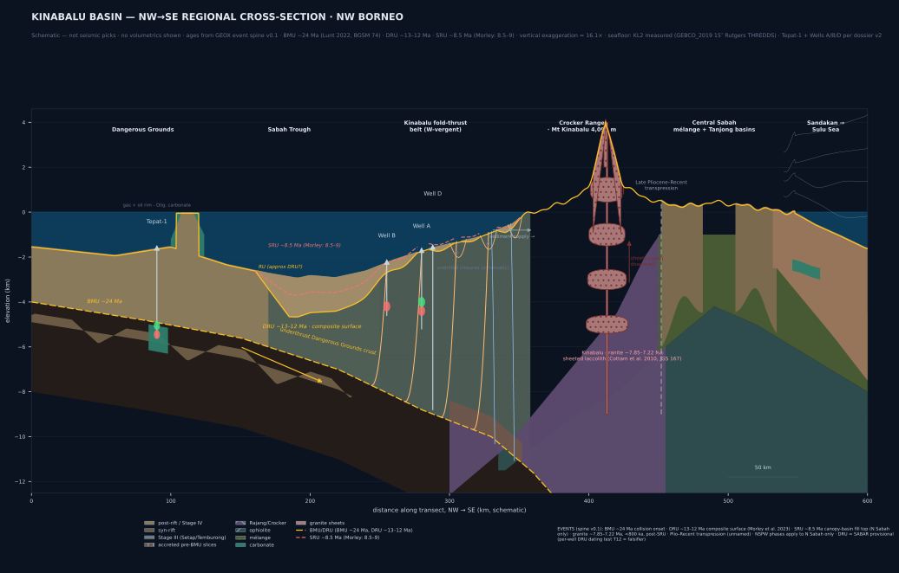

Geological cross-section — Kinabalu Basin
WHERE arif-fazil.com / earth / cross-section
WHAT NW–SE transect, 519 km geodesic (KT_POINTS v9 aligned) — see KL2 panel for measured 687 km variant
SCALE vertical scale ≈16× exaggerated
LAYERS 12 provinces · 2 unconformities
◈ Spatial Locator · NW–SE Transect B–B' (519 km geodesic; KL2 measured 687 km)
TRANSECT: Dangerous Grounds → Sabah Trough → Crocker → Mt Kinabalu → Sulu Sea
ORIENTATION: NW–SE (135° Strike)
REAL-TIME COORDS: 6.3500° N, 115.6000° E
PIPE: Macrostrat & USGS Seismic Feed

Tectonic Events · 5 Acts
- ~40 MaSarawak Orogeny — Rajang Group folded, Crocker accretion begins
- ~24 MaBMU / collision onset — Dangerous Grounds collision begins (Lunt 2022, BGSM 74)
- ~13–12 MaDRU — composite surface (Morley et al. 2023) · age after Lunt 2022, BGSM 74 · SABAR provisional (T12 per-well DRU dating = falsifier)
- ~7.9–7.2 MaKinabalu granite — sheeted laccolith, post-SRU (Cottam et al. 2010)
- 8.5 MaSRU — post-canopy burial · transpression (readings differ)
Real Elevations · DEM-sampled (coarse)
- Mt Kinabalu: +3,945 m (GEBCO_2019 15″ cell) · 4,095.2 m Low's Peak geodetic (Sabah Parks) — grid attenuated, summit truth is geodetic
- Crocker Range: +900–1,025 m (SRTM coarse regional)
- Central Sabah: +300–630 m (SRTM coarse regional)
- Sabah Trough: −2,924 m @ chainage 191.3 km (KL2 measured, GEBCO_2019) — not a regional-axis claim, line-specific
- Sulu Sea: ~1,500–4,000 m deepening east (GEBCO coarse, ±1 km grid)
F2 · numbers above are DEM cell samples (460 m / 1.9 km grid), not point observations. Geodetic witness stands separate.
Wells (5) — Plays Tested
- Megah-1 — well (schematic; play detail not published)
- Tepat-1 — Oligocene syn-rift · gas · Layang-Layang
- Well B — Stage IV post-DRU · oil · Kinabalu
- Well A — Stage IV (Kinabalu Field) · gas + oil · Kinabalu
- Well D — deeper pool · gas + oil · 2025 (per dossier v2)
Fold-Thrust Belt · T1–T4
- W-vergent imbricated fan · 4 thrust sheets · toe-thrust dominant
- Anticlinal closures form the petroleum traps
- Kinabalu Field (producing) · ~500 MMstb OOIP (Bait 2003, BGSM 47)
- Closure 1, 3, 4 · undrilled or sub-commercial
- Sediment transport: E→W · Crocker source → Stage IV sink
Cross-section · SRTM topography via open-meteo.com · Bathymetry from published values · Geology from Balaguru & Hall (2009), Balaguru et al. (2003), Bait (2003), Madon & Jong (2022), PETRONAS MPM (2025), TGS Choi (2026), Ab Ghani et al. EAGE (2026). Vertical exaggeration ≈16× (computed). F7 humility: body shapes are interpretive schematics, not seismic picks.
◂ BACK TO DOSSIER · DOWNLOAD PDF ↓ · GEOX COCKPIT — PENDING (geox.arif-fazil.com/basins/kinabalu/ 404 as of 2026-10-08)
◂ BACK TO DOSSIER · DOWNLOAD PDF ↓ · GEOX COCKPIT — PENDING (geox.arif-fazil.com/basins/kinabalu/ 404 as of 2026-10-08)